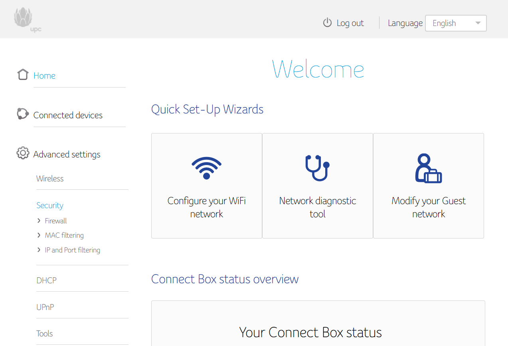

 I would like to open some ports in my Connect Box, but I cannot acces the "Port Forwarding" menu. After some research, I found that my router should have the "Port Forwarding" menu under the Security settings . Nevertheless, mine looks like this:
Could you please help me to be able to access this configuration? Thank you!
P.S.: I know that most likely, I need magenta to setup something in my account, but I was not able to reach the customer technical service by phone. So if someone from magenta needs my customer number, I can provide it by private message.
Bearbeitet von Karo
You habe to request a public ipv4 Adress.
You can do that over magenta.at/service
Thank you @IT-Freak . Where exactly at magenta.at/service can I request that? I couldn't find it; by WhatsApp they told me that they cannot do technical stuff and I couldn't contact yesterday the hotline for technical support... Is there another way, like email? Thanks again.
Try the magenta hotline. Unfortunately their is no email contact possible.
Hello there DG -- did you ever get this resolved? I'm attempting to do the same (in order to open ports 80 and 443).
It is not a general Problem. It has to be activated for each costumer which needs this feature.
(It is a feature which is creating costs for magenta so it is only activated on request.)
Please request a public IPv4 Adresse or request a change your internetline to IPV4.
E.g. "Könnten Sie mir bitte meine Internetleitung auf IPv4 umstellen."
Hey, just stumbled upon this, did it work?
vor 51 Minuten schrieb worldofpk:Hey, just stumbled upon this, did it work?
Wenn du einen Magenta Kabel Internet Anschluss hast, musst du damit Portweiterleitungen funktionieren bei Magenta anrufen oder per Facebook oder Twitter anschreiben und eine Umstellung des Internetanschluss auf IPv4 beantragen. Die Bearbeitung dauert ein paar Werktage. Irgendwann startet das Modem dann von selbst neu.
Wenn du einen anderen Magenta Internet-Anschluss hast z.B. einen Mobilfunk Cube, dann ist dies nicht der richtige Lösungsweg.
Wenn du dir nicht sicher bist was für einen Internet-Anschluss du hast, scheib bitte was für einen Modem/Router du hast. The Information is typisch auf einem Sticker auch der Unterseite des Gerätes zu finden. Alternativ kannst du auch ein Foto vom dem Gerät machen und hochladen.
If you have a Magenta cable internet connection in order for port forwarding to work, you need to call Magenta or Message them via Facebook or Twitter and request for your internet connection be switched to IPv4. It may take a couple of business days until your request is processed. At some point the modem will reboot automatically.
If you have another kind of internet connection from Magenta (e.g. a cellular router) then is not the right path for you.
If you are not sure which kind of internet connection you use, please post what modem/router you have. This information is printed on a sticker which is typically placed on the bottom of the device. Alternatively, you can also upload a picture of the device.
Bearbeitet von NTM
Hallo!
Gibt das Forwarding auch für IPv6 bzw ist das dann noch nötig?
Ich habe Foundry Virtual Table Top laufen und möchte, dass die Leute meinem Spiel beitreten können und dafür brauche ich das Forwarding.
Es geht auch mit UPnP, aber das hat die connect Box nicht?
Danke
Bearbeitet von Ferrox{kind=link}
{kind=link}